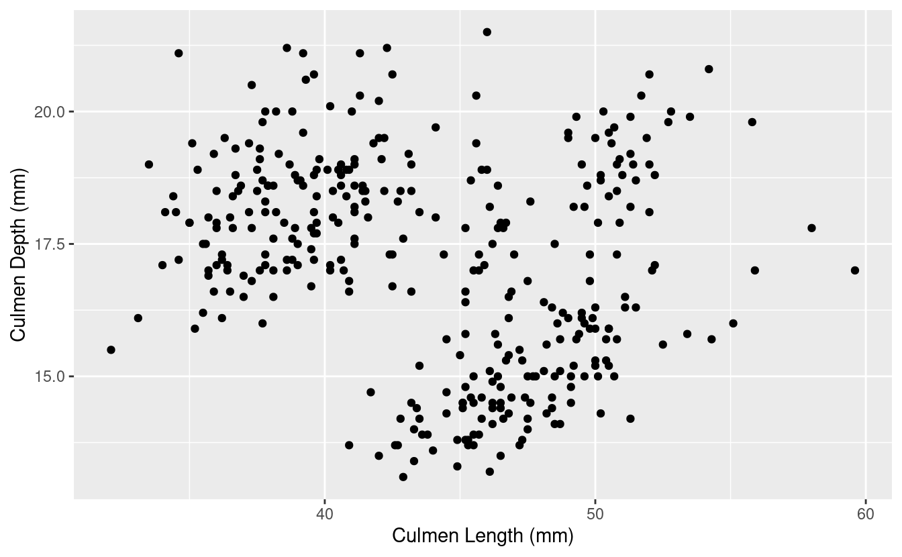
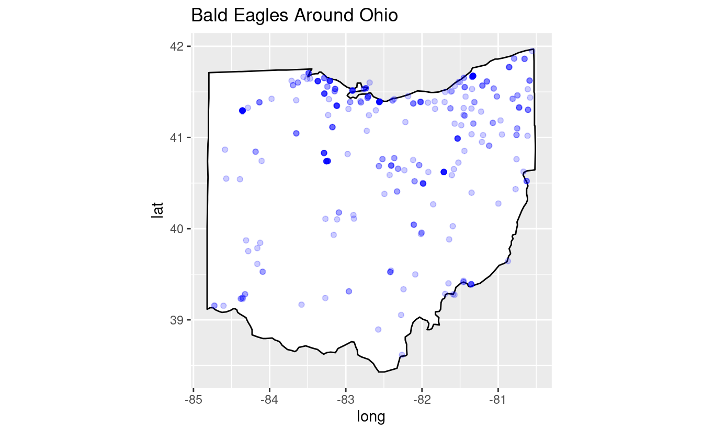

Session 15: Plotly
Making our plots interactive
Prep homework
Basic computer setup
-
If you didn’t already do this, please follow the Code Club Computer Setup instructions, which also has pointers for if you’re new to R or RStudio.
-
If you’re able to do so, please open RStudio a bit before Code Club starts – and in case you run into issues, please join the Zoom call early and we’ll help you troubleshoot.
New to ggplot?
Check out the three Code Club pages for Session 4, Session 5 and Session 10 which are all about ggplot2.
If you’ve never used ggplot2 before (or even if you have), you may find this cheat sheet useful.
Getting Started
RMarkdown for today’s session
# directory for Code Club Session 15:
dir.create("S15")
# directory for our RMarkdown
# ("recursive" to create two levels at once.)
dir.create("S15/Rmd/")
# save the url location for today's script
todays_Rmd <-
'https://raw.githubusercontent.com/biodash/biodash.github.io/master/content/codeclub/15_plotly/Plotly-withOUT-answers.Rmd'
# indicate the name of the new Rmd
Session15_Rmd <- "S15/Rmd/Session15_plotly.Rmd"
# go get that file!
download.file(url = todays_Rmd,
destfile = Session15_Rmd)
1 - What is plotly?
Today we are going to talk about making interactive plots using Plotly. Plotly exists in a variety of programming languages, but today we will be just talking about using it in R. All of the plotly documentation can be found here.
If you have never used plotly before, install it with the code below.
install.packages("plotly")
Here are some useful links to find info about using ggplotly.
- Basic ggplot2 charts
- Plotly R library fundamentals
- Intro to
ggplotly() - Using
layout() ggplotly()tooltips
Before we start, there are two basic ways to use plot in R using plotly:
- Using
ggplotly()- this is what we will go over today because it has the same syntax asggplot()which we have already learned - Using
plot_ly()- there is slightly more functionality in this function, but the syntax is all new, so I’d suggest if you can do what you want withggplotly(), do that. The syntax is not particularly hard so don’t be scared to use it if interactive plots are something you’re very interested in.
When you are googling about using plotly, you will find a combination of ggplotly() and plot_ly() approaches, and some parts of the code are interchangable. The easiesy way to see which parts are, is to try.
Also note, Google gets a bit confused when googling “ggplotly” and often returns information about just ggplot, so read extra carefully when problem solving.
This is an example of work from my group where we have found plotly to be particularly useful.
Data from Bilbrey et al., bioRxiv 2021
2 - Load libraries, get data
Lets load the libraries we are using for today.
library(tidyverse)
library(plotly) # for making interactive plots
library(htmlwidgets) # for saving html files
library(palmerpenguins) # for our penguins data
Let’s look at penguins_raw this time, a df that has a bit more data than the penguins df.
head(penguins_raw)
#> # A tibble: 6 x 17
#> studyName `Sample Number` Species Region Island Stage `Individual ID`
#> <chr> <dbl> <chr> <chr> <chr> <chr> <chr>
#> 1 PAL0708 1 Adelie… Anvers Torge… Adul… N1A1
#> 2 PAL0708 2 Adelie… Anvers Torge… Adul… N1A2
#> 3 PAL0708 3 Adelie… Anvers Torge… Adul… N2A1
#> 4 PAL0708 4 Adelie… Anvers Torge… Adul… N2A2
#> 5 PAL0708 5 Adelie… Anvers Torge… Adul… N3A1
#> 6 PAL0708 6 Adelie… Anvers Torge… Adul… N3A2
#> # … with 10 more variables: `Clutch Completion` <chr>, `Date Egg` <date>,
#> # `Culmen Length (mm)` <dbl>, `Culmen Depth (mm)` <dbl>, `Flipper Length
#> # (mm)` <dbl>, `Body Mass (g)` <dbl>, Sex <chr>, `Delta 15 N (o/oo)` <dbl>,
#> # `Delta 13 C (o/oo)` <dbl>, Comments <chr>
head(penguins)
#> # A tibble: 6 x 8
#> species island bill_length_mm bill_depth_mm flipper_length_… body_mass_g sex
#> <fct> <fct> <dbl> <dbl> <int> <int> <fct>
#> 1 Adelie Torge… 39.1 18.7 181 3750 male
#> 2 Adelie Torge… 39.5 17.4 186 3800 fema…
#> 3 Adelie Torge… 40.3 18 195 3250 fema…
#> 4 Adelie Torge… NA NA NA NA NA
#> 5 Adelie Torge… 36.7 19.3 193 3450 fema…
#> 6 Adelie Torge… 39.3 20.6 190 3650 male
#> # … with 1 more variable: year <int>
3 - Create base ggplot object
Using the penguins_raw dataset and make a scatter plot with Culmen Length on the y, and Culmen Depth on the x.
bill_depth_length <- penguins_raw %>%
ggplot(aes(x = `Culmen Length (mm)`, y = `Culmen Depth (mm)`)) +
geom_point()
bill_depth_length
#> Warning: Removed 2 rows containing missing values (geom_point).

4 - Make it interactive with ggplotly()
You can learn more about the ggplotly() function, including its arguments here.
ggplotly(bill_depth_length)
Wow that was easy!
Let’s add a title and change the theme to make our plot a little prettier before we progress.
bill_depth_length <- penguins_raw %>%
ggplot(aes(x = `Culmen Length (mm)`, y = `Culmen Depth (mm)`)) +
geom_point() +
theme_minimal() +
labs(title = "Understanding Penguin Bill Dimensions")
ggplotly(bill_depth_length)
5 - Using tooltip
Using tooltip helps you to indicate what appears when you hover over different parts of your plot. You can learn more about controlling tooltip here.
What if we want to hover over each point and be able to tell which Island the penguin was found on?
To do this, we indicate what we want to hover with using text = in our aesthetic mappings. Then, we indicate tooltip = "text" to tell ggplotly() what we want to hover.
bill_depth_length <- penguins_raw %>%
ggplot(aes(x = `Culmen Length (mm)`, y = `Culmen Depth (mm)`,
text = Island)) +
geom_point() +
theme_minimal() +
labs(title = "Understanding Penguin Bill Dimensions")
ggplotly(bill_depth_length,
tooltip = "text")
You can play around a lot with tooltip to get it to be exactly how you want, and you can include multiple things in your hover text.
You can also indicate to hover with data that is not inherently in your plot by mapping it to a group aesthetic.
bill_depth_length <- penguins_raw %>%
ggplot(aes(x = `Culmen Length (mm)`, y = `Culmen Depth (mm)`,
text = Island, group = `Individual ID`)) +
geom_point() +
theme_minimal() +
labs(title = "Understanding Penguin Bill Dimensions")
ggplotly(bill_depth_length,
tooltip = c("text", "Individual ID")) # hover test will be in this order
#> Warning: `group_by_()` was deprecated in dplyr 0.7.0.
#> Please use `group_by()` instead.
#> See vignette('programming') for more help
You may also want to paste in some text to your hover info to provide additional clarity on what you are showing.
You can use paste to add some information you’d like to see in each of the hover texts, here, we are indicating Island: Island. You can also add multiple variables within text, and it will populate in the hover text in the way you indicate. There is an example of how to do this in Bonus 1.
bill_depth_length <- penguins_raw %>%
ggplot(aes(x = `Culmen Length (mm)`, y = `Culmen Depth (mm)`,
text = paste("Island:", Island))) +
geom_point() +
theme_minimal() +
labs(title = "Understanding Penguin Bill Dimensions")
ggplotly(bill_depth_length,
tooltip = "text")
6 - Hover label aesthetics
You might not like the default hover text aesthetics, and can change them! You can do this using style and layout and adding these functions using the pipe %>%.
# setting fonts for the plot
font <- list(
family = "Roboto Condensed",
size = 15,
color = "white")
# setting hover label specs
label <- list(
bgcolor = "#FF0000",
bordercolor = "transparent",
font = font) # we can do this bc we already set font
# plotting like normal
bill_depth_length <- penguins_raw %>%
ggplot(aes(x = `Culmen Length (mm)`, y = `Culmen Depth (mm)`,
text = paste("Island:", Island))) +
geom_point() +
theme_minimal() +
labs(title = "A Deep Dive (ha) Into \nUnderstanding Penguin Bill Dimensions")
# use\n to bring your text to another line
# amending our ggplotly call to include new fonts and hover label specs
ggplotly(bill_depth_length, tooltip = "text") %>%
style(hoverlabel = label) %>%
layout(font = font)
7 - Dynamic ticks
Keep your axis labels so when you zoom, you can see where you are on your plot. Remember, you can zoom and pan around your plot!
ggplotly(bill_depth_length,
tooltip = "text",
dynamicTicks = TRUE)
8 - Animating
Add frame in your aesthetics mapping to tell plotly what column to animate over. You can then play your animation, or toggle from one view to another.
# add frame
bill_depth_length <- penguins_raw %>%
ggplot(aes(x = `Culmen Length (mm)`, y = `Culmen Depth (mm)`,
frame = Island, text = `Individual ID`)) +
geom_point() +
theme_minimal() +
labs(title = "Understanding Penguin Bill Dimensions")
ggplotly(bill_depth_length,
tooltip = "text")
Note: I know this plot isn’t animating – for an animated version, see this page. Also, if you do this in R yourself, you will find the code works.
9 - Everything you know about ggplot still applies!
Don’t forget you can use things like faceting, that we have gone over previously in Session 10.
bill_depth_length <- penguins %>%
ggplot(aes(x = bill_length_mm, y = bill_depth_mm, color = species,
text = paste("Island:", island))) +
geom_point() +
theme_minimal() +
theme(legend.position = "none") +
labs(title = "Understanding Penguin Bill Dimensions",
x = "Culmen Bill Length (mm)",
y = "Culmen Bill Depth (mm)") +
facet_wrap(~species)
ggplotly(bill_depth_length,
tooltip = "text")
10 - Saving your plots
Now that you’ve made a beautiful interactive plot, you probably want to save it.
Assign the plot you want to save to an object, and use the function saveWidget() to save it. You can find the documentation here.
# assign ggplotly plot to an object
ggplotly_to_save <- ggplotly(bill_depth_length,
tooltip = "text")
# save
saveWidget(widget = ggplotly_to_save,
file = "ggplotlying.html")
Breakout rooms
We are going to use the birds dataset from previous weeks, and gapminder data for the bonus.
Let’s grab the birds data.
# create directory for data to go
dir.create('data/birds/', recursive = TRUE)
# preparing to download
# denote bird file url
birds_url <-
'https://raw.githubusercontent.com/biodash/biodash.github.io/master/assets/data/birds/backyard-birds_Ohio.tsv'
# denote file name
birds_file <- 'data/birds/backyard-birds_Ohio.tsv'
# get file
download.file(url = birds_url,
destfile = birds_file)
Read in data.
# read in birds data
birds <- read_tsv(file = 'data/birds/backyard-birds_Ohio.tsv')
#>
#> ── Column specification ────────────────────────────────────────────────────────
#> cols(
#> class = col_character(),
#> order = col_character(),
#> family = col_character(),
#> genus = col_character(),
#> species = col_character(),
#> locality = col_character(),
#> stateProvince = col_character(),
#> decimalLatitude = col_double(),
#> decimalLongitude = col_double(),
#> eventDate = col_datetime(format = ""),
#> species_en = col_character(),
#> range = col_character()
#> )
Look at your new df.
head(birds)
#> # A tibble: 6 x 12
#> class order family genus species locality stateProvince decimalLatitude
#> <chr> <chr> <chr> <chr> <chr> <chr> <chr> <dbl>
#> 1 Aves Pass… Corvi… Cyan… Cyanoc… 44805 A… Ohio 40.9
#> 2 Aves Pass… Corvi… Cyan… Cyanoc… 45244 C… Ohio 39.1
#> 3 Aves Pass… Corvi… Cyan… Cyanoc… 44132 E… Ohio 41.6
#> 4 Aves Pass… Corvi… Cyan… Cyanoc… 45242 C… Ohio 39.2
#> 5 Aves Pass… Corvi… Cyan… Cyanoc… 45246 C… Ohio 39.3
#> 6 Aves Pass… Corvi… Cyan… Cyanoc… 44484 W… Ohio 41.2
#> # … with 4 more variables: decimalLongitude <dbl>, eventDate <dttm>,
#> # species_en <chr>, range <chr>
For a knitted HTML with answers, you can also see this page.
Exercise 1
Filter your new birds df to only include bald eagles. Check to see how many bald eagle sightings there were in Ohio.
Hints (click here)
Try using a [`filter()`](https://dplyr.tidyverse.org/reference/filter.html), and consider filtering based on `species_en`Solutions (click here)
bald_eagle <- birds %>%
filter(species_en == "Bald Eagle")
# what do we have?
head(bald_eagle)
#> # A tibble: 6 x 12
#> class order family genus species locality stateProvince decimalLatitude
#> <chr> <chr> <chr> <chr> <chr> <chr> <chr> <dbl>
#> 1 Aves Acci… Accip… Hali… Haliae… Mentor Ohio 41.7
#> 2 Aves Acci… Accip… Hali… Haliae… 45742 L… Ohio 39.3
#> 3 Aves Acci… Accip… Hali… Haliae… Morelan… Ohio 41.4
#> 4 Aves Acci… Accip… Hali… Haliae… Eastlake Ohio 41.7
#> 5 Aves Acci… Accip… Hali… Haliae… 44060 M… Ohio 41.7
#> 6 Aves Acci… Accip… Hali… Haliae… 44839 H… Ohio 41.4
#> # … with 4 more variables: decimalLongitude <dbl>, eventDate <dttm>,
#> # species_en <chr>, range <chr>
# check our df dimensions
dim(bald_eagle)
#> [1] 381 12
Exercise 2
Create a map that plots all the bald eagles found around Ohio. Color the points blue. Make sure the aspect ratio of Ohio looks reasonable to you.
Hints (click here)
Go back to Sessions [11](https://biodash.github.io/codeclub/11_ggplot-maps/) and [12](https://biodash.github.io/codeclub/12_loops/) to re-remember how maps work. Don't forget to call [`library(maps)`](https://rdrr.io/r/base/library.html).Solutions (click here)
library(maps)
#>
#> Attaching package: 'maps'
#> The following object is masked from 'package:purrr':
#>
#> map
# get map of the states
states <- map_data("state")
# filter states to only include ohio
ohio <- states %>%
filter(region == "ohio")
# plot
ggplot(data = ohio,
aes(x = long, y = lat, group = group)) +
geom_polygon(color = "black", fill = "white") +
geom_point(data = bald_eagle,
aes(x = decimalLongitude, y = decimalLatitude, group = NULL),
color = "blue", alpha = 0.2) +
coord_fixed(1.2) +
labs(title = 'Bald Eagles Around Ohio')

Exercise 3
Make your plot interactive so you can hover and and see the locality of each bald eagle observation.
Hints (click here)
You may want to call `text` within `geom_point()`.Solutions (click here)
bald_eagles_ohio <-
ggplot(data = ohio,
aes(x = long, y = lat, group = group)) +
geom_polygon(color = "black", fill = "white") +
geom_point(data = bald_eagle,
aes(x = decimalLongitude, y = decimalLatitude, group = NULL,
text = locality),
color = "blue", alpha = 0.2) +
coord_fixed(1.2) +
labs(title = 'Bald Eagles Around Ohio')
ggplotly(bald_eagles_ohio,
tooltip = "text")
Exercise 4
Change the hover text so that the background color is red, clean up your axis labels, and make all the fonts for the plot Arial.
Hints (click here)
You can set fonts either within your `ggplot()` call, or setting `font` within [`layout()`](https://docs.ropensci.org/plotly/reference/layout.html). You can customize the hover label with [`style()`](https://docs.ropensci.org/plotly/reference/style.html).Solutions (click here)
# setting fonts for the plot
eagle_font <- list(
family = "Arial",
size = 15,
color = "white")
# setting hover label specs
eagle_label <- list(
bgcolor = "red",
bordercolor = "transparent",
font = eagle_font) # we can do this bc we already set font
bald_eagles_ohio <-
ggplot(data = ohio,
aes(x = long, y = lat, group = group)) +
geom_polygon(color = "black", fill = "white") +
geom_point(data = bald_eagle,
aes(x = decimalLongitude, y = decimalLatitude, group = NULL,
text = locality),
color = "blue", alpha = 0.2) +
coord_fixed(1.2) +
labs(title = 'Bald Eagles Around Ohio',
x = "Latitude",
y = "Longitude")
# amending our ggplotly call to include new fonts and hover label specs
ggplotly(bald_eagles_ohio, tooltip = "text") %>%
style(hoverlabel = eagle_label) %>%
layout(font = eagle_font)
Bonus
Bonus 1
Let’s go back to the Gapminder data we looked at in the instructional part of Session 10 on faceting, animating, and multi-plotting.
Make a bubble-style plot that shows the life expectancy vs. GDP per capita over 1952 to 2007 for all countries. Color by continent, and indicate population by size. Use your knowledge of making plots to alter it such that you think it is descriptive and aesthetic.
Hints (click here)
Set text to what you want to hover (try adding multiple variables in there!), play around with theme and scaling, change fonts and aesthetics until you are pleased. You can download the gapminder data like this:
# install.packages("gapminder") # if you weren't at Session 10
library(gapminder)
head(gapminder)
#> # A tibble: 6 x 6
#> country continent year lifeExp pop gdpPercap
#> <fct> <fct> <int> <dbl> <int> <dbl>
#> 1 Afghanistan Asia 1952 28.8 8425333 779.
#> 2 Afghanistan Asia 1957 30.3 9240934 821.
#> 3 Afghanistan Asia 1962 32.0 10267083 853.
#> 4 Afghanistan Asia 1967 34.0 11537966 836.
#> 5 Afghanistan Asia 1972 36.1 13079460 740.
#> 6 Afghanistan Asia 1977 38.4 14880372 786.
Solutions (click here)
gapminder_font <- list(
family = "Roboto Condensed")
gapminder_bubble <- gapminder %>%
ggplot(aes(x = gdpPercap, y = lifeExp,
fill = continent, size = pop,
text = paste(
"Country:", country,
"\nLife expectancy:", round(lifeExp,1),
"\nGDP per capita:", round(gdpPercap,0)))) +
geom_point(aes(frame = year), color = "black", shape = 21, stroke = 0.2) +
scale_x_log10() +
theme_minimal() +
theme(plot.title = element_text(size = 18)) +
labs(title = "Changing Life Expectancy and GDP Per Capita Worldwide \nFrom 1952 to 2007",
x = "GDP per capita (in International Dollars)",
y = "Life Expectancy (years)",
fill = "",
size = "")
ggplotly(gapminder_bubble,
tooltip = c("text")) %>%
layout(font = gapminder_font)
Note: I know this plot isn’t animating – for an animated version, see this page. Also, if you do this in R yourself, you will find the code works.